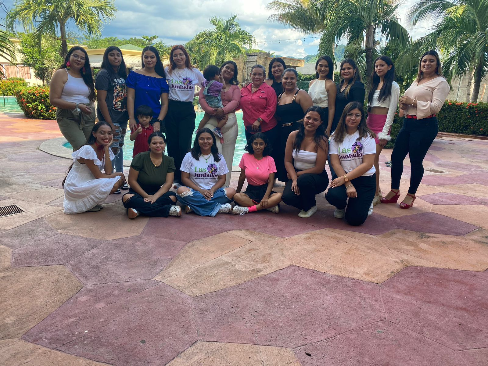
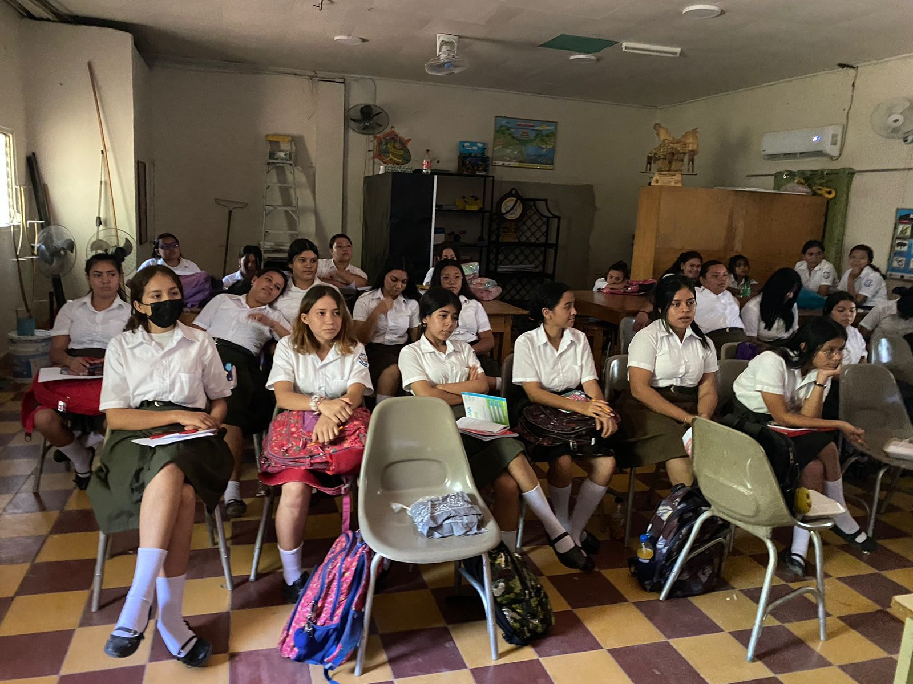

Creemos en la importancia de la voz femenina y en la lucha constante por un mundo más inclusivo y equitativo.
A través de nuestros artículos, recursos y diálogo abierto, buscamos inspirar, educar y fomentar la
reflexión sobre temas que afectan a mujeres y personas de género diverso.
Proyecto Juntes Decidimos
Escuela Virtual
Fecha: 02 - 20 de septiembre de 2023

Con este proyecto queremos enseñarles a las mujeres jovenes que aun estan en escuelas y colegios el valor y el poder que tienen y a liberarse de las cadenas que las detienen de una manera virtual y poder expresarse en plenitud.
Proyecto Juntes Decidimos
Escuela Presencial
Fecha: 20 - 30 de Septiembre de 2023

En esta segunda etapa logramos ir de manera presencial a escuelas y colegios y enseñarles a las chicas de una manera mas practica y didactica el valor y el poder que tienen y a liberarse de las cadenas que las detienen de una manera virtual y poder expresarse en plenitud.
Proyecto con las OPS
Fecha: 19 de octubre de 2023

brindamos charlas, folletos y otros materiales educativos en las escuelas sobre el trato hacia la mujer.
Las Juntadas

El feminismo es la búsqueda incansable de igualdad entre géneros. No es una lucha contra los hombres, sino contra la discriminación basada en el género. Es la creencia de que todas las personas merecen los mismos derechos y oportunidades, independientemente de su género. El feminismo no solo beneficia a las mujeres; es un movimiento que aboga por un mundo donde todos puedan vivir sin restricciones impuestas por estereotipos de género. Al desafiar normas obsoletas, el feminismo trabaja para construir una sociedad inclusiva y justa para todos. Apoyar el feminismo es abogar por la equidad, la diversidad y el respeto mutuo.